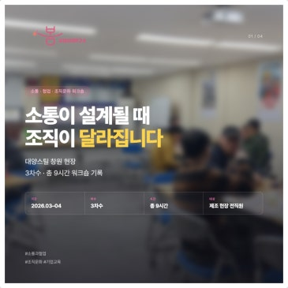
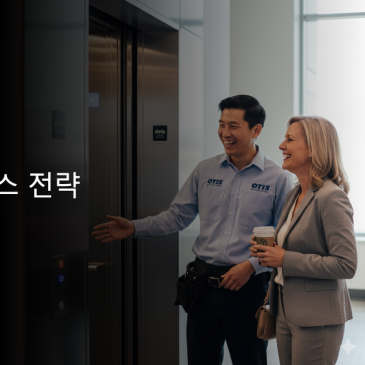
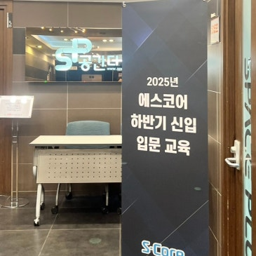

행동의 원인과 관계의 흐름을 이해한 뒤 변화가 일어나도록 설계합니다.
Approach
개인과 조직을 따로 보지 않습니다
심리 기반 접근으로 개인의 이해와 행동 변화를 함께 다루고,
기업교육과 코칭의 관점을 연결해 조직 안의 실제 협업 변화를 돕습니다.
조직의 업종, 대상, 맥락에 맞춰 워크숍 밀도와 사례를 조정합니다.
편안한 분위기 속에서도 핵심은 분명하게 전달하는 진행을 지향합니다.
Programs
기업 현장에서 가장 많이 찾는 프로그램
HR 담당자와 조직 리더가 빠르게 이해할 수 있도록 핵심 주제를 3가지로 정리했습니다.
조직문화·협업 워크숍
조직 내 소통 구조를 점검하고 함께 일하는 방식을 다시 설계하는 참여형 워크숍입니다.
- 현장 조직, 팀 단위 구성원, 제조·대기업 조직
- 협업 단절, 오해, 침묵 구조 개선
- 실행 가능한 협업 기준 도출
커뮤니케이션 교육
신입사원부터 관리자까지 관계 형성, 피드백, 업무 소통 역량을 실무 중심으로 강화합니다.
- 신입사원, 실무자, 관리자, 리더 대상
- 피드백, 설득, 공감, 실무 소통 강화
- 일하는 관계의 긴장과 오해 완화
코칭 프로그램
자기이해를 바탕으로 리더와 구성원, 개인이 각자의 성장 방향을 명확히 하도록 돕습니다.
- 리더, 구성원, 개인 고객 대상
- 잠재력 발견과 실행력 강화
- 개인의 성장과 조직의 변화를 연결
Proof
최근 강의와 워크숍 이력
블로그에 기록된 실제 진행 사례를 중심으로 신뢰 근거를 정리했습니다.

2026.04
대양스틸 조직문화·소통·협업 워크숍
제조 현장 조직의 소통 구조를 점검하고 협업 방식을 재설계한 3차수 워크숍입니다.

2026.04
오티스엘리베이터 CX·CS 교육
기술 직군의 서비스 맥락에 맞춰 고객경험과 고객서비스를 심화한 교육입니다.

2026.03
HMM 피드백 리더십 강의·워크숍
책임연구원을 대상으로 리더의 피드백 역량과 소통 방식을 다룬 과정입니다.

2026.02
에스코어 신입사원 협업 교육
신입 구성원이 관계를 형성하고 함께 일하는 방식을 체감하도록 설계한 참여형 교육입니다.
Profile
이재란 소장 소개
코칭심리 기반의 기업교육과 코칭 프로그램을 통해 개인과 조직의 성장을 함께 돕습니다.
이재란 소장은 봄 코칭심리연구소를 운영하며
리더십, 소통, 협업, 조직문화 주제를
심리학적 이해와 실제 적용 사이의 간극 없이 풀어내는 기업교육 전문가입니다.
참여자가 스스로 이해하고 움직이도록 돕는 워크숍형 설계를 강점으로 하며,
따뜻한 분위기와 신뢰감 있는 진행 속에서 교육 이후의 행동 변화를 중요하게 다룹니다.
코칭심리 기반
기업교육 1차 타깃
공공기관 확장 가능
Contact
강의와 워크숍, 이렇게 연결해 주세요
기업교육, 조직문화 워크숍, 커뮤니케이션 교육, 코칭 프로그램 문의를 환영합니다.
조직의 상황과 교육 목적에 맞는 방향으로 함께 설계해드립니다.